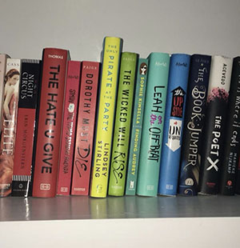

Results: Inconclusive!
Clearly, you’re not ready for the results of this test. And hey, that’s ok. It’s a little scary! You have Catholic guilt telling you your feelings are wrong. But don't worry; you’ll find your way in time. So just keep on taking your "subtle rainbow" pictures to celebrate pride!
